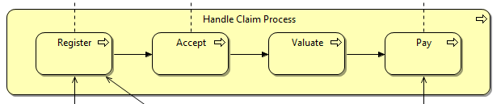
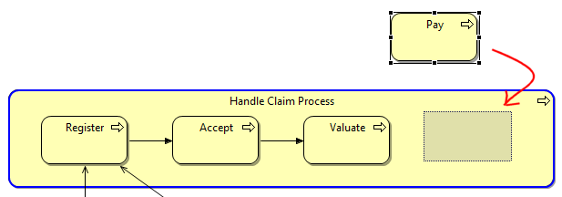
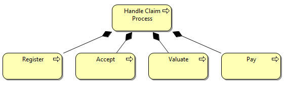
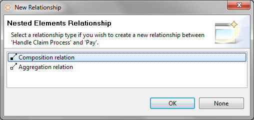
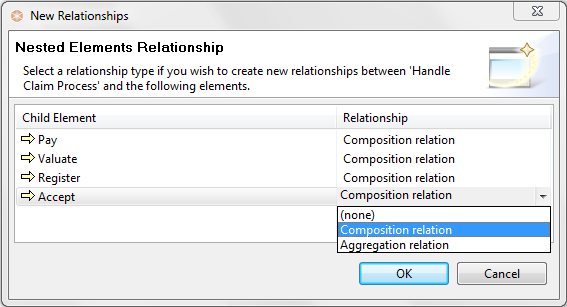

Messy arrangement of explicit connections
Each graphical element (except for notes and junctions) can act as a container element for other elements. Dragging and dropping an element inside of another element means that it becomes a child of the parent element. This is useful to represent containment type relationships such as Composition, Aggregation, and Association or for convenient grouping.
In the following screenshot the elements "Register", "Accept", "Valuate" and "Pay" are child elements of the parent "Handle Claim Process" element:
Child elements contained by a parent element
While dragging elements into or over other elements a visual cue is provided to indicate that the dragged element will be moved into the parent (container) element. This is a blue highlight around the target element as the element is dragged over it:

A Child Element being Dragged into a Container Element. The Container highlighted in blue
The ArchiMate specification states that the relationships Composition, Aggregation and Association may also be expressed by nesting the model elements. That is to say, an explicit connection need not be drawn between the parent and child elements but that they may be drawn as a container nested type instead.
Archi supports this convention with Automatic Relationship Management (ARM). This system ensures that relationships are automatically created and hidden between qualifying parent/child elements. The system can be configured to suit the user's needs. See Preferences to configure the ARM.
The best way to explain the Automatic Relationship Management system (ARM) is by an example.
Suppose the user has a Business Process element named "Handle Claim Process" that will act as a container element ("parent") for four sub-processes, "Register", "Accept", "Valuate" and "Pay". The relationship between the parent process and the sub-processes would normally be expressed as four Composition relationships. These can be drawn conventionally using connecting lines as follows:

Composition relationship between parent and child processes
However, this is visually not as clear as if the sub-processes were placed inside of the container parent process. Unfortunately, simply moving the elements into the parent results in a mess:
Messy arrangement of explicit connections
In order to tidy up this arrangement we need to delete the four Composition connections. We cannot delete the Composition relationships from the actual model as this would mean that it is not semantically correct. We could delete the connections from the View (the "Delete from View" command) which would leave the relationships in the model, but then the "Analysis" Properties table would not show that the relationships were used in this View (they would display in an italic font in the Model Tree, see "Elements in the Model Tree and Views")
We can solve this problem by enabling the ARM system in Preferences. This ensures that when the sub-processes are placed in the parent element the connections are hidden in the View, but are still regarded as present in the View in the "Analysis" table of the relationship's properties. Dragging the child elements in and out of the parent element hides and then shows the explicit connections. We regard the hidden connections as "implicit" connections.

The Connections now hidden from the View
Adding new elements to a parent element in a View from the Palette or dragging and dropping from the Model Tree results in a dialog box asking if a new relationship should be created between the parent and child elements:

Dialog to create a new nested relationship
Note that the dialog will only display valid relationships between the parent and child elements, and only those that are specified in Preferences. If you do not wish to create a new relationship, select "None".
If more than one element is moved (drag and drop operation) to a parent element in a View or is dragged and dropped from the Model Tree onto a parent element, and there are no existing preferred relationships between the parent and the child elements then a dialog box is displayed offering to create new relationships between the parent element and the child elements. You can choose a different type of relationship for each child element:

Dialog for creating more than one relationship
If you do not wish to create a new relationship for an element, select "(none)" from the drop-down combo box. To select the same type of relationship in the drop-down combo-box, hold down the Ctrl / Command key and select.
If the "Link to View" button is enabled in the Model Tree and you select a relation in the Tree then normally the corresponding connection is selected in the View, but in the case of an implicit type connection (hidden) then the parent and child elements are selected in the View to show that relationship.
 To see a screen-cast demonstration of the Automatic Relationship Management (ARM) system go to this web-site: http://archi.cetis.ac.uk/movies/nested-relations/nested-relations.html
To see a screen-cast demonstration of the Automatic Relationship Management (ARM) system go to this web-site: http://archi.cetis.ac.uk/movies/nested-relations/nested-relations.html